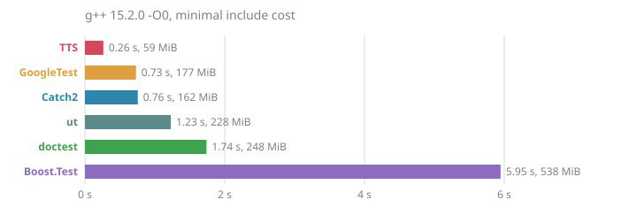
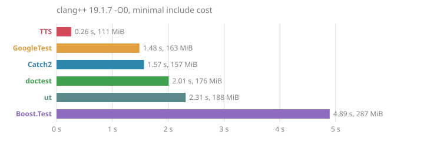
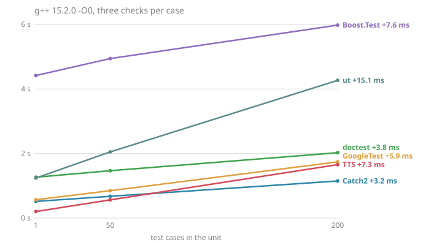
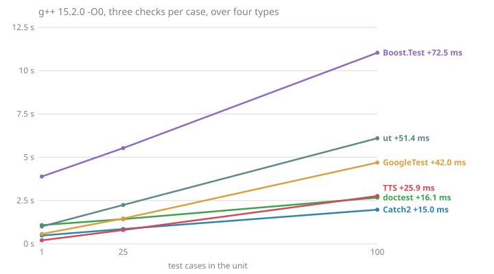
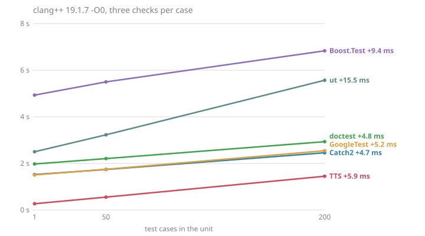
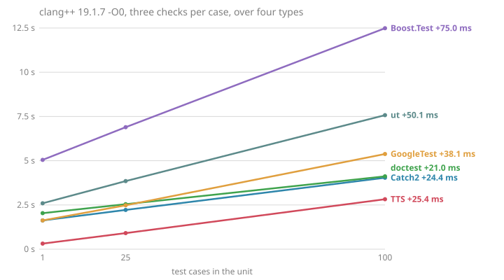
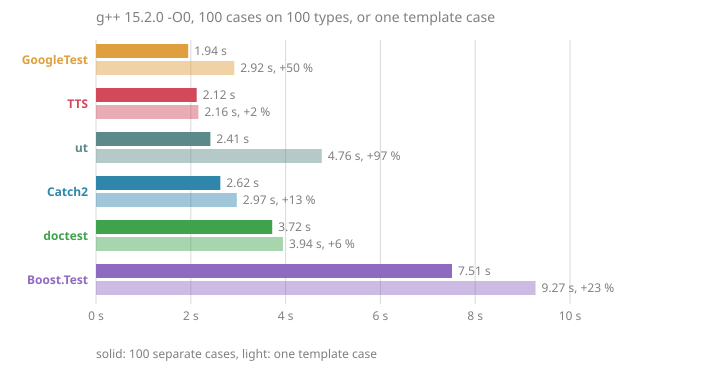
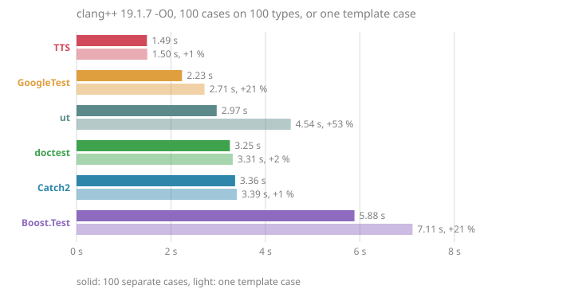

|
TTS v4.0.0
The Tiny Test System
|
The library is header-only, and a test suite holds dozens or hundreds of small translation units, each including <tts/tts.hpp> on its own. No separately compiled object amortizes the parsing: every header TTS pulls in is parsed again by every test file, in every project using it, at every build. The CI matrix of this project alone rebuilds the suite on more than a dozen combinations of compiler, system and standard library per pull request, so a heavy header added to a widely included file multiplies its cost by every one of those builds.
The library therefore writes small replacements for what it needs, such as a minimal string type, a monotonic clock or a move-only file wrapper, rather than include the standard facility.
The cost of a header is measured, never assumed: some light-looking headers cost a lot, and some heavy-looking ones cost nothing. The table gives the time a header adds to a minimal TTS_MAIN translation unit, with g++ 13 and clang++ 18, -std=c++20, best of 8 runs, measured as Checklist for a new header describes.
| Header | g++ | clang++ | Avoided via |
|---|---|---|---|
| <chrono> | +460ms (~4x) | +680ms (~6x) | tools/clock.hpp's now_ns(), built on clock_gettime/QueryPerformanceCounter |
| <memory> | +170ms (~2x) | +210ms (~2.5x) | tools/file.hpp's file_guard, a hand-rolled move-only RAII wrapper instead of std::unique_ptr |
| <sstream> | +140ms | +190ms | tools/text.hpp builds strings via malloc/snprintf |
| <iostream> | +140ms | +170ms | output goes through FILE*/fputs, not std::cout |
| <functional> | +100ms | +100ms | never: tools/erased.hpp's type-erased callable wraps every TTS_CASE body, the hottest path of the library |
| <string> | +90ms | +110ms | tts::text is TTS's own minimal string type |
| <unordered_map> | +60ms | +60ms | avoided unless genuinely needed |
| <vector> | +50ms | +60ms | tools/buffer.hpp's tts::buffer, a minimal malloc-based dynamic array |
| <map> | +50ms | +50ms | avoided unless genuinely needed |
| <regex> | +270ms (~3x) | +350ms (~3.5x) | not needed so far |
| <thread> | +200ms (~2.3x) | +240ms (~2.8x) | not needed so far |
| <array> | +20ms | +20ms | C arrays, sized by a constant |
A standard header stays allowed once measured as free. <windows.h>, guarded by WIN32_LEAN_AND_MEAN and NOMINMAX and included only on the Windows branch of tools/clock.hpp, measured on cl.exe as free relative to an empty translation unit, and lighter than declaring the three functions it provides by hand. Code reserved to a platform is measured on that platform.
These files exist because a standard header did not clear the bar, and serve as models for a new replacement:
The charts give the CPU time of compiling one test unit with -std=c++20 -c, with TTS and with doctest, Catch2, GoogleTest, Boost.Test and ut, measured again at each build of this documentation. Every point is the median of several compilations.
Measured on 2026-10-10 with clang++ 19.1.7 and g++ 15.2.0 and -O0, the median of 3 compilations per point, 2 at a time.
Catch2 and GoogleTest compile their runner in a library of their own, which the charts do not count. doctest, Boost.Test, ut and TTS compile it in the unit that defines it.
The unit holds the test runner and no test case.


The unit holds a growing number of test cases. A simple case runs three checks on two integers, and a template case runs the same three checks over short, int, float and double.




The unit holds N test cases, each on a type of its own, then a single template test case over the same N types, with the largest N measured. The gap between the two bars is the cost of the template machinery of each library alone.


Each curve is fitted by least squares as a fixed cost and a cost per test case. Where another library costs less per case than TTS, its line crosses the one of TTS at the number of cases the second table gives; always means it never does. Against Catch2 and GoogleTest, the crossing is a lower bound, their runner being left out.
Cost of a unit holding \(n\) test cases, fitted as a fixed part and a part per case:
| Library | simple cases | template cases |
|---|---|---|
| TTS | \(0.29\,\mathrm{s} + 10.0\,\mathrm{ms} \cdot n\) | \(0.31\,\mathrm{s} + 43.6\,\mathrm{ms} \cdot n\) |
| Boost.Test | \(6.19\,\mathrm{s} + 11.1\,\mathrm{ms} \cdot n\) | \(6.16\,\mathrm{s} + 115.8\,\mathrm{ms} \cdot n\) |
| Catch2 | \(0.84\,\mathrm{s} + 4.9\,\mathrm{ms} \cdot n\) | \(0.89\,\mathrm{s} + 27.8\,\mathrm{ms} \cdot n\) |
| GoogleTest | \(0.87\,\mathrm{s} + 9.1\,\mathrm{ms} \cdot n\) | \(0.93\,\mathrm{s} + 70.0\,\mathrm{ms} \cdot n\) |
| doctest | \(1.85\,\mathrm{s} + 5.8\,\mathrm{ms} \cdot n\) | \(1.87\,\mathrm{s} + 28.5\,\mathrm{ms} \cdot n\) |
| ut | \(1.78\,\mathrm{s} + 21.4\,\mathrm{ms} \cdot n\) | \(1.84\,\mathrm{s} + 84.0\,\mathrm{ms} \cdot n\) |
Number of test cases in a unit up to which TTS compiles faster:
| Against | simple cases | template cases |
|---|---|---|
| Boost.Test | always | always |
| Catch2 | 109 | 37 |
| GoogleTest | 698 | always |
| doctest | 377 | 103 |
| ut | always | always |
Cost of a unit holding \(n\) test cases, fitted as a fixed part and a part per case:
| Library | simple cases | template cases |
|---|---|---|
| TTS | \(0.27\,\mathrm{s} + 6.0\,\mathrm{ms} \cdot n\) | \(0.28\,\mathrm{s} + 25.4\,\mathrm{ms} \cdot n\) |
| Boost.Test | \(4.90\,\mathrm{s} + 9.7\,\mathrm{ms} \cdot n\) | \(4.99\,\mathrm{s} + 75.0\,\mathrm{ms} \cdot n\) |
| Catch2 | \(1.56\,\mathrm{s} + 4.8\,\mathrm{ms} \cdot n\) | \(1.61\,\mathrm{s} + 24.4\,\mathrm{ms} \cdot n\) |
| GoogleTest | \(1.54\,\mathrm{s} + 5.4\,\mathrm{ms} \cdot n\) | \(1.56\,\mathrm{s} + 38.1\,\mathrm{ms} \cdot n\) |
| doctest | \(2.00\,\mathrm{s} + 5.1\,\mathrm{ms} \cdot n\) | \(2.02\,\mathrm{s} + 21.0\,\mathrm{ms} \cdot n\) |
| ut | \(2.49\,\mathrm{s} + 16.9\,\mathrm{ms} \cdot n\) | \(2.57\,\mathrm{s} + 50.1\,\mathrm{ms} \cdot n\) |
Number of test cases in a unit up to which TTS compiles faster:
| Against | simple cases | template cases |
|---|---|---|
| Boost.Test | always | always |
| Catch2 | 1082 | 1295 |
| GoogleTest | 2144 | always |
| doctest | 1776 | 396 |
| ut | always | always |